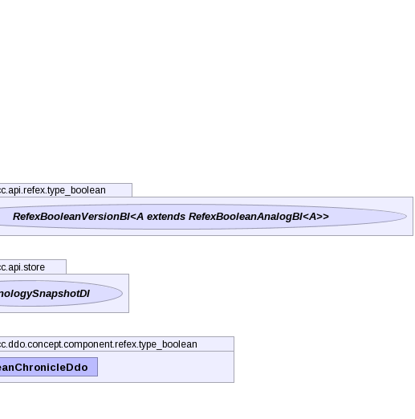

public class RefexBooleanVersionDdo extends RefexVersionDdo<RefexBooleanChronicleDdo,RefexBooleanVersionDdo>
|  |
| Type | Property and Description |
|---|---|
javafx.beans.property.SimpleBooleanProperty |
boolean1 |
authorReferenceProperty, fxTimeProperty, moduleReferenceProperty, pathReferenceProperty, statusReferenceProperty| Modifier and Type | Field and Description |
|---|---|
static long |
serialVersionUID |
chronicleunspecifiedUserUuid| Constructor and Description |
|---|
RefexBooleanVersionDdo() |
RefexBooleanVersionDdo(RefexBooleanChronicleDdo chronicle,
TerminologySnapshotDI ss,
RefexBooleanVersionBI another) |
| Modifier and Type | Method and Description |
|---|---|
javafx.beans.property.SimpleBooleanProperty |
boolean1Property() |
boolean |
equals(Object obj)
Compares this object to the specified object.
|
boolean |
getBoolean1() |
void |
setBoolean1(boolean booleanValue) |
String |
toString()
Returns a string representation of the object.
|
getComponentRef, getRefexRef, getTypeafterUnmarshal, getAdditionalIds, getAnnotations, getChronicle, getComponentNid, getConcept, getIdCount, getPrimordialComponentUuid, getUuids, getVersionCount, getVersionsauthorReferenceProperty, fxTimeProperty, getAuthorReference, getFxTime, getModuleReference, getPathReference, getStatus, getStatusString, getViewCoordinateUuid, informAboutUuid, moduleReferenceProperty, pathReferenceProperty, setAuthorReference, setFxTime, setModuleReference, setPathReference, setStatus, setStatusString, setViewCoordinateUuid, statusReferencePropertypublic static final long serialVersionUID
public RefexBooleanVersionDdo()
public RefexBooleanVersionDdo(RefexBooleanChronicleDdo chronicle, TerminologySnapshotDI ss, RefexBooleanVersionBI another) throws IOException, ContradictionException
IOExceptionContradictionExceptionpublic javafx.beans.property.SimpleBooleanProperty boolean1Property()
public boolean equals(Object obj)
public String toString()
toString in class VersionDdopublic boolean getBoolean1()
public void setBoolean1(boolean booleanValue)
Copyright © 2013 International Health Terminology Standards Development Organisation. All rights reserved.